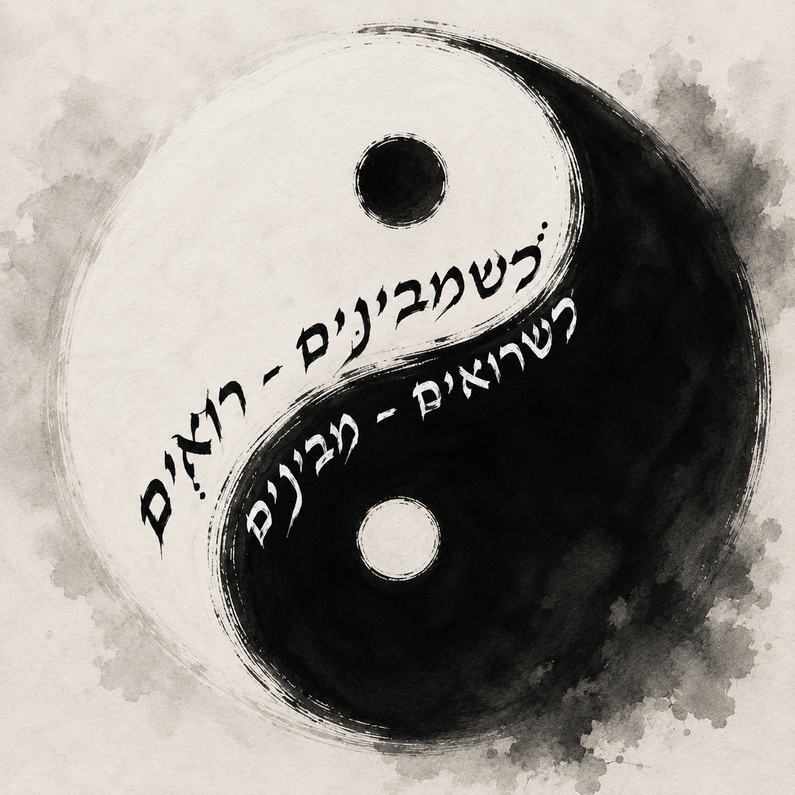

רשת האינטרנט מתחילה במרחב שלך – בטלפון, במחשב, בטלוויזיה החכמה, ובראוטר שמחבר ביניהם. כל המכשירים האלה כבר מדברים אחד עם השני כל הזמן. הבית שלך כבר מלא בשיחות דיגיטליות שקטות, גם כשנדמה שהכל "דומם". ובעצם, LAN, או בשמה המלא Local Area Network, זה לא רק "חיבור" – זו קהילה קטנה של מערכות שמודעות אחת לשנייה. זה לא רק "אינטרנט". לפני האינטרנט הגדול יש רשת קטנה, קרובה, ומקומית – רשת מקומית, כפי שמרמז שמה באנגלית.
כלומר: רשת שפועלת באזור מקומי, כמו בית, חנות, או מפעל.
השם ניתן
כי המכשירים לא רק מחוברים לראוטר – הם גם מחוברים אחד לשני. המחשב, הטלפון, הטלוויזיה החכמה, והמדפסת – כולם נמצאים בתוך אותה רשת, ומסוגלים לתקשר אחד עם השני. וכשמבינים שהרשת מתחילה כאן במרחב שלך, מתחילים לראות אותה.
אנחנו חיים בתוך רשת עצומה, אבל רוב הזמן לא מודעים אליה.
ברגע זה ממש אנחנו בתוך האינטרנט. השיחה עצמה היא אינטרנט. האצבע גוללת את המסך, והגלילה הופכת לתנועה בתוך מערכת. פיקסלים משתנים בזמן אמת – מידע זורם בין רשתות, שרתים, נתבים, ומערכות שונות. ובתוך כל זה, התודעה נעה דרך שכבות של מידע.
רשת תודעת־מידע־תקשורתית, הזורמת דרך מערכות שונות.
דבהתחלה, מערכות עבדו לבד. אבל הצורך במידע גדל, והתקשורת הפכה לצורך קיומי. וכך המידע החל לנוע בין מערכות, ולחצות גבולות.
כדי שמידע יוכל לעבור, הוא צריך קודם להשתנות. הוא לא זז כמו שהוא. לפני שהוא יוצא לדרך, הוא מתפרק ליחידות קטנות.
בעולם הדיגיטלי, מידע מיוצג באמצעות 0 ו־1. גם 0 הוא מידע – הוא לא "כלום". 0 ו־1 הם מצבים שונים שבעזרתם מחשבים מייצגים מידע. במחשבים ובמערכות אלקטרוניות, המצבים האלה מיוצגים בדרך כלל באמצעות חשמל:
יש זרם / אין זרם
דלוק / כבוי
כך מערכות אלקטרוניות מצליחות לייצג מידע. כל 0 או 1 כזה נקרא ביט.
Bit = Binary Digit
כלומר: ספרה בינארית. ביט הוא יחידת המידע הקטנה ביותר בעולם הדיגיטלי. אנחנו רגילים לספירה עשרונית (Decimal), שמבוססת על עשר ספרות: 0 עד 9. מחשבים עובדים בצורה שונה – במקום להשתמש בספירה עשרונית, הם משתמשים בספירה בינארית.
Binary = מבוסס על שני מצבים
0 ו־1
8 ביטים מרכיבים בייט אחד. בייט נקרא לפעמים גם אוקטטה (Octet), מלשון Octo = שמונה. בייטים הם יחידות המידע שמחשבים משתמשים בהן כדי לשמור, לשלוח ולקבל מידע. כל מידע דיגיטלי – תמונה, סרטון, מוזיקה, טקסט או משחק – בסופו של דבר מיוצג באמצעות ביטים של 0 ו־1.
אם היו מנסים להעביר את כל המידע בבת אחת, כל תקלה קטנה בדרך הייתה יכולה להרוס את הכל. בנוסף, רשת האינטרנט עמוסה מאוד והמון מידע עובר בה כל הזמן.
במקום לשלוח הכל יחד המידע מתפרק לחלקים קטנים
כל חלק נעטף בפרוטוקולים שכבה אחר שכבה, והמידע מתפרק ונבנה בו זמנית בתהליך אחדות ניגוד כדי שיוכל לנוע בין מערכות.
והחלקים האלה יכולים לעבור בדרכים שונות בתוך רשת האינטרנט. לפעמים חלק אחד מגיע קודם, וחלק אחר מגיע מאוחר יותר, אבל בסוף כל החלקים מתחברים והמידע מתגבש מחדש ביעד – כל זה קורה במהירות עצומה, קרוב למהירות האור. אם חלק אחד נאבד, לא הכל נהרס – כך אפשר לשלוח מחדש רק את החלק שחסר. וגם אם חלק מסוים ברשת נופל או שדרך מסוימת מפסיקה לעבוד, עדיין אפשר להעביר מידע בדרכים אחרות. זאת אחת הסיבות שהאינטרנט בנוי כרשת גדולה ומבוזרת — ללא מרכז אחד שמנהל את הכל.
פרוטוקול = הסכמה איך לדבר
מחשבים צריכים שפה משותפת וחוקים ברורים לתקשורת. כאשר מידע עובר ברשת הוא לא נע "חשוף" – כדי שמערכות שונות יוכלו להבין, לכוון ולהעביר אותו,
המידע נעטף בפרוטוקולים.
כל שכבה מוסיפה מידע קטן נוסף שעוזר למידע לנוע בדרך הנכונה. שכבה אחת יכולה לעזור להבין מאיפה המידע הגיע ולאן הוא צריך להגיע. שכבה אחרת יכולה לעזור להבין איך לחלק את המידע ואיך להרכיב אותו מחדש. ושכבה נוספת יכולה לעזור להעביר אותו בתוך הרשת המקומית. אפשר לחשוב על זה כך: המידע עצמו הוא התוכן, והפרוטוקולים הם העטיפות שעוזרות לו לעבור בין מערכות.
עטוף בפרוטוקולים — כדי שהמידע יוכל לנוע.

Route = דרך / נתיב
Router = המכשיר שמכוון את הדרך של המידע בין רשתות.
הנתב מכוון הדרך
הנתב (Router) מחבר בין הרשת המקומית בבית לבין רשת האינטרנט הגדולה. הוא עוזר למידע לצאת מהרשת המקומית ולהגיע לרשתות אחרות בעולם. בנוסף, הנתב גם עוזר לנהל את הרשת המקומית בבית – לפעמים גם בתוך בית, משרד או ארגון יכולות להיות כמה רשתות שונות, וגם שם הנתב עוזר להעביר מידע בין הרשתות השונות. הוא מאפשר למכשירים שונים לתקשר אחד עם השני ולהתחבר לאינטרנט. אפשר לחשוב על הנתב גם כעל שער יציאה — GateWay: כאשר מידע צריך לצאת מהרשת המקומית בבית אל רשתות אחרות באינטרנט, הוא עובר דרך הנתב.